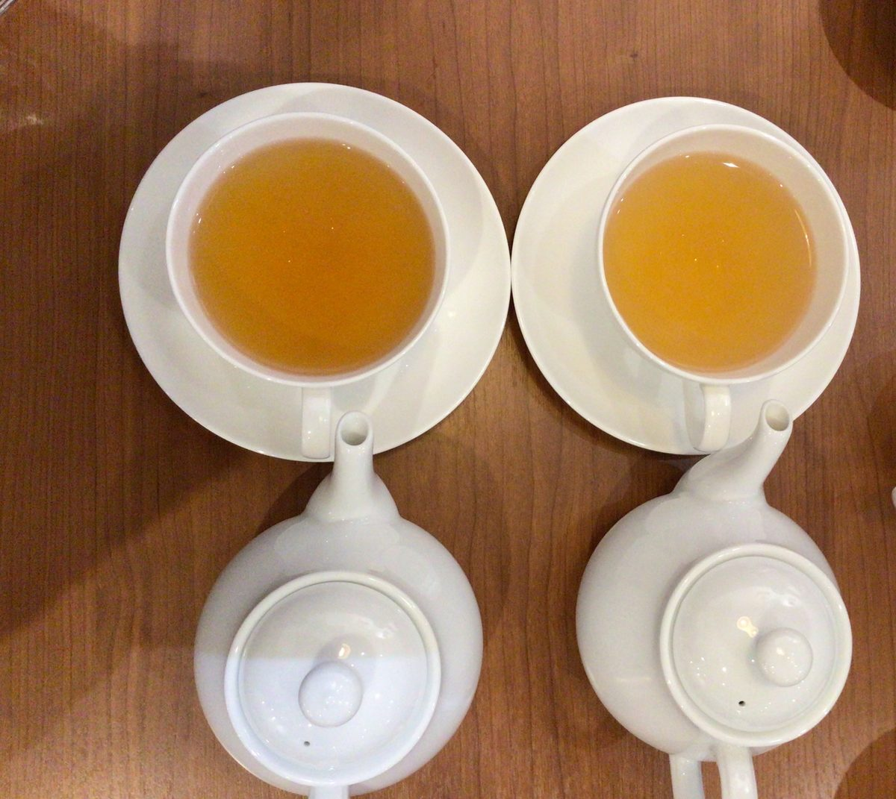

REFRE SERVER
りふれサーバー
毎日の飲み水や料理に使う水を、暮らしのそばで。

使用事例・お客様の声
りふれウォーターをお使いの方から寄せられた事例の一部です。

りふれの方が色が濃く出ました!塩素は除去したほうが味はいい。
紅茶専門店でのご利用


花瓶の水に。たった一晩でぴーん。
花瓶の水に使った方
※お客様の声は個人の感想です。茶葉・抽出条件、植物の種類や状態などによって結果は異なります。
毎日の飲み水や料理に使う水を、暮らしのそばで。
りふれウォーターをお使いの方から寄せられた事例の一部です。

りふれの方が色が濃く出ました!塩素は除去したほうが味はいい。
紅茶専門店でのご利用
花瓶の水に。たった一晩でぴーん。
花瓶の水に使った方
※お客様の声は個人の感想です。茶葉・抽出条件、植物の種類や状態などによって結果は異なります。